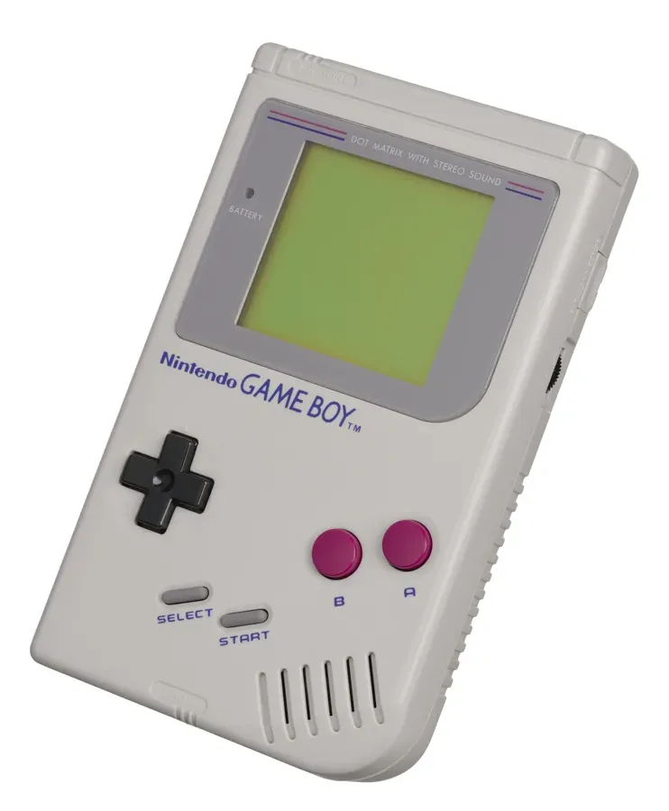

1989 年发布
Game Boy
黑白掌机之王 · 宝可梦引爆全球 · 1.18亿台传奇
1.18亿
全球销量
LCD
4级灰度屏幕
15h
AA电池续航
¥12,800
首发价格(日元)
📖 历史与背景
1989年4月21日，任天堂在日本发布Game Boy——由横井军平主导设计的便携游戏机。当时市面上已有彩色液晶掌机（如Atari Lynx和Sega Game Gear），但Game Boy使用四阶灰度黑白LCD，成本极低、续航惊人（4节AA电池可连续游玩15小时）。
Game Boy的成功离不开两个关键因素：第一是捆绑销售《俄罗斯方块》——任天堂从Elorg公司获得了掌机版俄罗斯方块的授权，而这款游戏证明了一个道理——"好游戏比好屏幕更重要"；第二是1996年的《精灵宝可梦 红/绿》——宝可梦的收集、交换、对战玩法完美契合了掌机的便携性和社交性，在日本引发校园现象。
Game Boy的生命周期长达14年（1989-2003），横跨了Game Boy Pocket、Game Boy Color等多个改款，最终全球累计销量达到惊人的1.18亿台。
⚙️ 硬件规格
CPU
Sharp SM83 定制8位 (4.19MHz)
屏幕
2.6寸 160×144 LCD（4级灰度）
内存
8KB SRAM + 8KB VRAM
色数
4阶灰度（黑/深灰/浅灰/白）
音效
4通道脉冲波+噪声通道
电池
4节AA电池（约15-30小时）
连接
通信电缆（对战线）
重量
约220g（含电池）
🎮 经典游戏阵容
精灵宝可梦 红/绿
1996 · RPG
集换对战RPG，引爆全球校园热潮
俄罗斯方块
1989 · 益智
GB捆绑游戏，史上最伟大益智游戏
塞尔达传说：梦见岛
1993 · 动作冒险
GB上最伟大的游戏之一
超级马里奥大陆
1989 · 平台跳跃
首发护航，GB上最卖座游戏
瓦力欧大陆
1994 · 平台跳跃
瓦力欧首秀，创意关卡设计
星之卡比
1992 · 平台
樱井政博早期作品，吞噬能力
勇者斗恶龙怪兽篇
1998 · RPG
宝可梦风格但保留了DQ的味道
超级马里奥大陆2
1992 · 平台跳跃
6枚金币，GB平台百万销量
🏆 市场表现与影响
- 全球销量：1.18亿台（含GB、GBP、GBC），任天堂首个突破亿台的机型
- 宝可梦现象：宝可梦红绿蓝在GB上引爆全球，动画、卡牌全面出击，成为任天堂最大IP
- 俄罗斯方块权争夺：任天堂为拿下掌机俄罗斯方块授权进行了复杂的跨国法律博弈——最终在GBC/GB的发布会上宣布成功，轰动业界
- 对战线：GB附带的通信电缆让两台GB之间可以联机对战，宝可梦的交易和战斗极大依赖这一功能
- 创纪录的电池续航：4节AA电池15小时以上——在LCD背光尚未普及的年代，这个续航至今让人惊叹
🔧 型号演变
- Game Boy初版（1989）：灰色机身，4节AA电池，绿色调LCD屏幕（实际显示有点偏绿）
- Game Boy Play It Loud!（1995）：推出红、绿、黄、蓝、橙等亮色外壳，屏幕些许改进
- Game Boy Pocket（1996）：体积缩小30%，使用2节AAA电池，屏幕对比度提升
- Game Boy Light（1998）：仅在日本发行，首款带EL背光的Game Boy
- Game Boy Color（1998）：彩色屏幕，向下兼容GB游戏，但本质上是下一代产品
💡 趣闻与冷知识
- Game Boy的设计团队测试了各种摔落、踩踏、水流场景——最终它的坚固程度堪比诺基亚3310，甚至有传闻说在海湾战争中被烧毁的GB依然能运行
- GB的绿屏LCD其实不是"绿色"的，而是因为当时的LCD在折射自然光时偏绿。任天堂的决策是"便宜比彩色更重要"
- 《塞尔达传说：梦见岛》的故事灵感来自开发团队对《双截龙》的致敬——最初想过做一个GB版的"白天做梦"设定
- 宝可梦的"交易进化"（如勇基拉→胡地需要通信交换）完全是设计上的巧合——开发者田尻智觉得"交换是宝可梦的核心，那为什么不把进化也做成交换呢？"
- 俄罗斯方块在GB上的全球影响力极大——据说GB版《俄罗斯方块》是历史上平均每台设备游玩时间最长的游戏之一